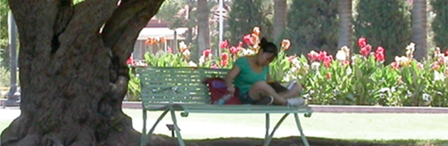

Academic Calendar
Dates for Term Start and End, Final Exams, Holidays,
Commencement
Academic Departments
Departments, Schools
and Colleges
Academic Policies
Grades, Graduation,
Honors, Transferring to UA
Course Descriptions
UA
Courses for Credit
General Education
Tiers One &
Two, Math, Composition
Majors & Degrees
Undergraduate Degree Requirements
Minors
Undergraduate Minor
Requirements

The General Catalog is the University's primary, comprehensive single source of departmental, college and university-wide information related to academic programs. Courses, degree programs, and policies that govern progress towards completion of a degree are described in the Catalog. Students are responsible for knowing and understanding the contents of the catalog they are following and are strongly encouraged to read the UA's student responsibility policy.
For non-academic information that used to be included in the Catalog (before the Catalog became online only), please refer to Related Topics on the Academic Policies and Procedures page or go to the UA Homepage.
On many subjects, more detailed information is available from departments, colleges or administrative units responsible for various programs and services. Students should seek information from these sources as needed.
Additional catalog information:
|
UA Official Record: Volume CIII, No. 1, May 2011 Contact: Catalog Team
|